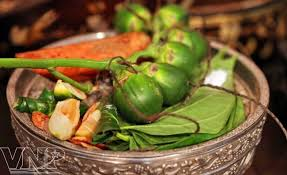

Trầu cau
Tình yêu là gì? Là ta yêu một người mỗi ngày trong một năm...
10 lời khuyên dinh dưỡng

Cơ thể cần nhiều chất dinh dưỡng từ nhiều nguồn thực phẩm khác nhau...
Làm sao để bỏ thuốc lá?
Bỏ thuốc lá giúp giảm nguy cơ mắc bệnh và cải thiện sức khỏe tổng quát.
Các tour mới nhất
Khám phá các địa điểm hấp dẫn như Côn Minh, Macau, Cà Mau...
Điểm du lịch nổi tiếng
Những địa danh nổi tiếng như Đảo Bali, Thành cổ Rome, Vạn Lý Trường Thành...
Các món ăn mới trong tuần
Thưởng thức các món ăn đặc sắc từ mọi vùng miền, mang hương vị truyền thống.
Chuyên mục dạy nấu ăn
Các công thức nấu ăn chi tiết, dễ thực hiện dành cho mọi đối tượng.
Nhạc thiếu nhi
Các bài hát thiếu nhi vui nhộn như: Nắng sân trường, Mẹ yêu không nào...
Dân ca
Những làn điệu dân ca mượt mà như: Bèo dạt mây trôi, Lý cây bông...